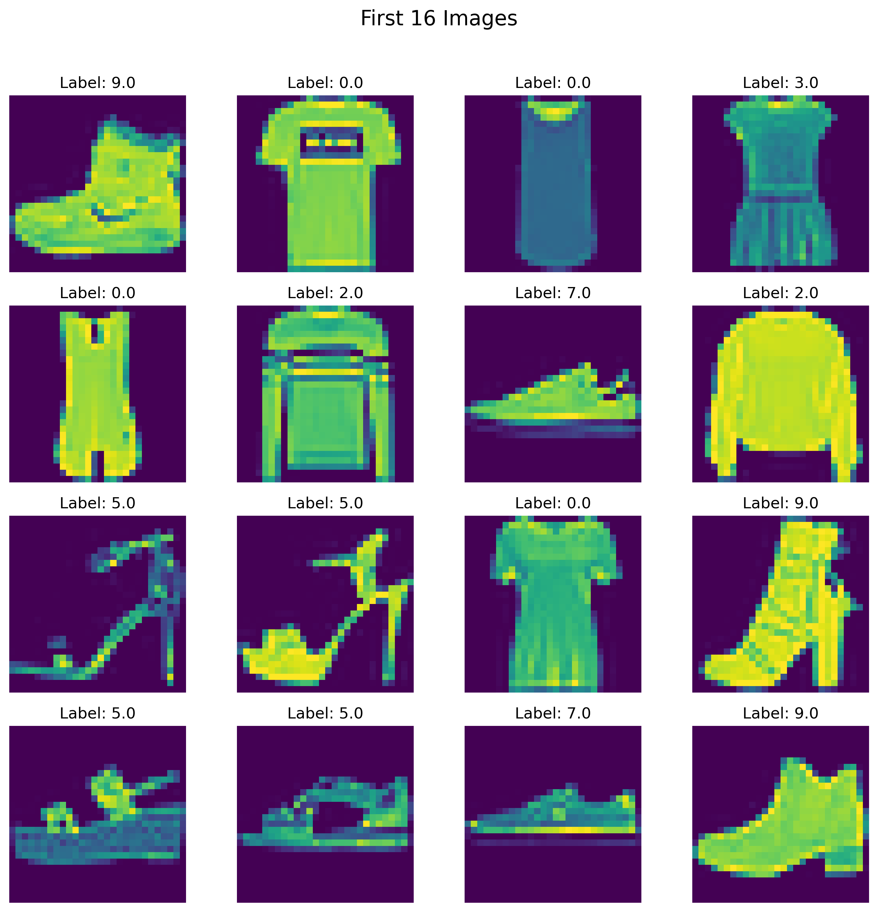

import torch
print(torch.__version__)2.7.0August 3, 2025
Let’s load pytorch library and see the version of it.
Use CPU if GPU (CUDA) is not available.
if torch.cuda.is_available():
print("GPU is available!")
print(f"Using GPU: {torch.cuda.get_device_name(0)}")
else:
print("GPU not available. Using CPU.")GPU not available. Using CPU.So, I am using CPU. Let’s start making tensors and build from very basics.
Let’s check type of pur tensor.
tensor([[0.3679, 0.8661, 0.1737],
[0.7157, 0.8649, 0.4878]])# other ways
# arange
a = torch.arange(0,15,3)
print("using arange ->", a)
# using linspace
b = torch.linspace(0,15,10)
print("using linspace ->", b)
# using eye
c = torch.eye(4)
print("using eye ->", c)
# using full
d = torch.full((3, 3), 5)
print("using full ->", d)using arange -> tensor([ 0, 3, 6, 9, 12])
using linspace -> tensor([ 0.0000, 1.6667, 3.3333, 5.0000, 6.6667, 8.3333, 10.0000, 11.6667,
13.3333, 15.0000])
using eye -> tensor([[1., 0., 0., 0.],
[0., 1., 0., 0.],
[0., 0., 1., 0.],
[0., 0., 0., 1.]])
using full -> tensor([[5, 5, 5],
[5, 5, 5],
[5, 5, 5]])We are making a new tensor (x) and checking shape of it. We can use the shape of x or any other already created tensor to make new tensors of that shape.
It’s not working, since rand makes float values in the tensor. So, we need to specify data type as float.
We are changing data type from float to int using dtype here.
tensor([1, 2, 3], dtype=torch.int32)Similarly, from int to float using dtype here.
Some common data types in torch. | Data Type | Dtype | Description | |—————————|——————-|——————————————————————————————————————————————————————————–| | 32-bit Floating Point | torch.float32 | Standard floating-point type used for most deep learning tasks. Provides a balance between precision and memory usage. | | 64-bit Floating Point | torch.float64 | Double-precision floating point. Useful for high-precision numerical tasks but uses more memory. | | 16-bit Floating Point | torch.float16 | Half-precision floating point. Commonly used in mixed-precision training to reduce memory and computational overhead on modern GPUs. | | BFloat16 | torch.bfloat16 | Brain floating-point format with reduced precision compared to float16. Used in mixed-precision training, especially on TPUs. | | 8-bit Floating Point | torch.float8 | Ultra-low-precision floating point. Used for experimental applications and extreme memory-constrained environments (less common). | | 8-bit Integer | torch.int8 | 8-bit signed integer. Used for quantized models to save memory and computation in inference. | | 16-bit Integer | torch.int16 | 16-bit signed integer. Useful for special numerical tasks requiring intermediate precision. | | 32-bit Integer | torch.int32 | Standard signed integer type. Commonly used for indexing and general-purpose numerical tasks. | | 64-bit Integer | torch.int64 | Long integer type. Often used for large indexing arrays or for tasks involving large numbers. | | 8-bit Unsigned Integer| torch.uint8 | 8-bit unsigned integer. Commonly used for image data (e.g., pixel values between 0 and 255). | | Boolean | torch.bool | Boolean type, stores True or False values. Often used for masks in logical operations. | | Complex 64 | torch.complex64 | Complex number type with 32-bit real and 32-bit imaginary parts. Used for scientific and signal processing tasks. | | Complex 128 | torch.complex128| Complex number type with 64-bit real and 64-bit imaginary parts. Offers higher precision but uses more memory. | | Quantized Integer | torch.qint8 | Quantized signed 8-bit integer. Used in quantized models for efficient inference. | | Quantized Unsigned Integer | torch.quint8 | Quantized unsigned 8-bit integer. Often used for quantized tensors in image-related tasks. |
Let’s define a tensor x first.
Now, let’s see some scalar operation on this tensor.
Let’s make 2 new tensors first. To do anything element-wise, the shape of the tensors should be the same.
tensor([[0.3759, 0.0295, 0.4132],
[0.0791, 0.0489, 0.9287]])
tensor([[0.4924, 0.8416, 0.1756],
[0.5687, 0.4447, 0.0310]])tensor([[ 0., 0., 2.],
[ 0., 0., 29.]])Let’s apply absolute function on a custom tensor.
We only have positive values, right? As expected.
Let’s apply negative on the tensor.
We have negative signs on the previously positives, and positive signs on the previously negatives, right?
#round
d = torch.tensor([1.4, 4.4, 3.6, 3.01, 4.55, 4.9])
torch.round(d)
# ceil
torch.ceil(d)
# floor
torch.floor(d)tensor([1., 4., 3., 3., 4., 4.])Do you see what round, ciel, floor are doing here? It is not that difficult, try to see.
Let’s do some clamping. So, if a value is smaller than the min value provided, that value will be equal to the min value and values bigger than the max value will be made equal to the max value. All other values in between the range will be kept as they are.
tensor([[5., 1., 7.],
[7., 1., 5.]])# sum
torch.sum(e)
# sum along columns
torch.sum(e, dim=0)
# sum along rows
torch.sum(e, dim=1)
# mean
torch.mean(e)
# mean along col
torch.mean(e, dim=0)
# mean along row
torch.mean(e, dim=1)
# median
torch.median(e)
torch.median(e, dim=0)
torch.median(e, dim=1)torch.return_types.median(
values=tensor([5., 5.]),
indices=tensor([0, 2]))# max and min
torch.max(e)
torch.max(e, dim=0)
torch.max(e, dim=1)
torch.min(e)
torch.min(e, dim=0)
torch.min(e, dim=1)torch.return_types.min(
values=tensor([1., 1.]),
indices=tensor([1, 1]))Which value is the biggest here? How to get its position/index? Use argmax.
Which value is the smallest here? How to get its position/index? Use argmin.
vector1 = torch.tensor([1, 2])
vector2 = torch.tensor([3, 4])
# dot product
torch.dot(vector1, vector2)tensor(11)tensor([[7., 1., 3.],
[3., 2., 2.],
[7., 2., 4.]])tensor([[5., 8., 1.],
[3., 4., 4.]])tensor([[1.4841e+02, 2.9810e+03, 2.7183e+00],
[2.0086e+01, 5.4598e+01, 5.4598e+01]])tensor([[0.2179, 0.5475, 0.4801],
[0.2278, 0.7175, 0.8381]])
tensor([[0.2569, 0.9879, 0.0779],
[0.3233, 0.7714, 0.9524]])Copying a Tensor
Better way of making a copy
Now, let’s check their memory locations. They are at different locations.
Let’s go hard way. Let’s define our own differentiation formula. Our equation was \(y = x^2\). So, the derivative \(\frac{dy}{dx}\) will be \(2x\).
Let’s check for \(x = 3\) now.
But using PyTorch, it will be easy.
#import torch
x = torch.tensor(3.0, requires_grad=True) #gradient calculation requirement is set as True
y = x**2
x
ytensor(9., grad_fn=<PowBackward0>)We need to use backward on the last calculation (or variable) though, to calculate the gradient.
Now, let’s make the situation a bit complex. Let’s say we have another equation \(z = sin(y)\). So, if we want to calculate \(\frac{dz}{dx}\), it requires a chain formula to calculate the derivative. And it will be: \[\frac{dz}{dx} = \frac{dz}{dy}*\frac{dy}{dx}\]. If we solve the formula, the derivative will be: \(2*x*cos(x^2)\). And yes, since we have a trigonometric formula, we need to load the math library.
But let’s use our friend PyTorch to make our life easier.
So, let’s use backward on our z.
y.grad is not possible, since it is an intermediate leaf.
Let’s say a student got CGPA 3.10 and did not get a placement in an institute. So, we can try to make a prediction.
# Derivatives:
# 1. dL/d(y_pred): Loss with respect to the prediction (y_pred)
dloss_dy_pred = (y_pred - y)/(y_pred*(1-y_pred))
# 2. dy_pred/dz: Prediction (y_pred) with respect to z (sigmoid derivative)
dy_pred_dz = y_pred * (1 - y_pred)
# 3. dz/dw and dz/db: z with respect to w and b
dz_dw = x # dz/dw = x
dz_db = 1 # dz/db = 1 (bias contributes directly to z)
dL_dw = dloss_dy_pred * dy_pred_dz * dz_dw
dL_db = dloss_dy_pred * dy_pred_dz * dz_dbprint(f"Manual Gradient of loss w.r.t weight (dw): {dL_dw}")
print(f"Manual Gradient of loss w.r.t bias (db): {dL_db}")Manual Gradient of loss w.r.t weight (dw): 6.691762447357178
Manual Gradient of loss w.r.t bias (db): 0.998770534992218But let’s use our friend again.
tensor(0., requires_grad=True)tensor(6.7012, grad_fn=<NegBackward0>)Let’s insert multiple values (or a vector).
If we rerun all these things, the values get updtaed. So, we need to stop this behavior. How to do it?
Now, we don’t see requires_grad=True part here. So, it is off. Another way:
RuntimeError: element 0 of tensors does not require grad and does not have a grad_fnLoad an example dataset
df = pd.read_csv('https://raw.githubusercontent.com/gscdit/Breast-Cancer-Detection/refs/heads/master/data.csv')
df.head()| id | diagnosis | radius_mean | texture_mean | perimeter_mean | area_mean | smoothness_mean | compactness_mean | concavity_mean | concave points_mean | ... | texture_worst | perimeter_worst | area_worst | smoothness_worst | compactness_worst | concavity_worst | concave points_worst | symmetry_worst | fractal_dimension_worst | Unnamed: 32 | |
|---|---|---|---|---|---|---|---|---|---|---|---|---|---|---|---|---|---|---|---|---|---|
| 0 | 842302 | M | 17.99 | 10.38 | 122.80 | 1001.0 | 0.11840 | 0.27760 | 0.3001 | 0.14710 | ... | 17.33 | 184.60 | 2019.0 | 0.1622 | 0.6656 | 0.7119 | 0.2654 | 0.4601 | 0.11890 | NaN |
| 1 | 842517 | M | 20.57 | 17.77 | 132.90 | 1326.0 | 0.08474 | 0.07864 | 0.0869 | 0.07017 | ... | 23.41 | 158.80 | 1956.0 | 0.1238 | 0.1866 | 0.2416 | 0.1860 | 0.2750 | 0.08902 | NaN |
| 2 | 84300903 | M | 19.69 | 21.25 | 130.00 | 1203.0 | 0.10960 | 0.15990 | 0.1974 | 0.12790 | ... | 25.53 | 152.50 | 1709.0 | 0.1444 | 0.4245 | 0.4504 | 0.2430 | 0.3613 | 0.08758 | NaN |
| 3 | 84348301 | M | 11.42 | 20.38 | 77.58 | 386.1 | 0.14250 | 0.28390 | 0.2414 | 0.10520 | ... | 26.50 | 98.87 | 567.7 | 0.2098 | 0.8663 | 0.6869 | 0.2575 | 0.6638 | 0.17300 | NaN |
| 4 | 84358402 | M | 20.29 | 14.34 | 135.10 | 1297.0 | 0.10030 | 0.13280 | 0.1980 | 0.10430 | ... | 16.67 | 152.20 | 1575.0 | 0.1374 | 0.2050 | 0.4000 | 0.1625 | 0.2364 | 0.07678 | NaN |
5 rows × 33 columns
| diagnosis | radius_mean | texture_mean | perimeter_mean | area_mean | smoothness_mean | compactness_mean | concavity_mean | concave points_mean | symmetry_mean | ... | radius_worst | texture_worst | perimeter_worst | area_worst | smoothness_worst | compactness_worst | concavity_worst | concave points_worst | symmetry_worst | fractal_dimension_worst | |
|---|---|---|---|---|---|---|---|---|---|---|---|---|---|---|---|---|---|---|---|---|---|
| 0 | M | 17.99 | 10.38 | 122.80 | 1001.0 | 0.11840 | 0.27760 | 0.3001 | 0.14710 | 0.2419 | ... | 25.38 | 17.33 | 184.60 | 2019.0 | 0.1622 | 0.6656 | 0.7119 | 0.2654 | 0.4601 | 0.11890 |
| 1 | M | 20.57 | 17.77 | 132.90 | 1326.0 | 0.08474 | 0.07864 | 0.0869 | 0.07017 | 0.1812 | ... | 24.99 | 23.41 | 158.80 | 1956.0 | 0.1238 | 0.1866 | 0.2416 | 0.1860 | 0.2750 | 0.08902 |
| 2 | M | 19.69 | 21.25 | 130.00 | 1203.0 | 0.10960 | 0.15990 | 0.1974 | 0.12790 | 0.2069 | ... | 23.57 | 25.53 | 152.50 | 1709.0 | 0.1444 | 0.4245 | 0.4504 | 0.2430 | 0.3613 | 0.08758 |
| 3 | M | 11.42 | 20.38 | 77.58 | 386.1 | 0.14250 | 0.28390 | 0.2414 | 0.10520 | 0.2597 | ... | 14.91 | 26.50 | 98.87 | 567.7 | 0.2098 | 0.8663 | 0.6869 | 0.2575 | 0.6638 | 0.17300 |
| 4 | M | 20.29 | 14.34 | 135.10 | 1297.0 | 0.10030 | 0.13280 | 0.1980 | 0.10430 | 0.1809 | ... | 22.54 | 16.67 | 152.20 | 1575.0 | 0.1374 | 0.2050 | 0.4000 | 0.1625 | 0.2364 | 0.07678 |
5 rows × 31 columns
array([[-0.30279106, -0.87388841, -0.21264979, ..., 1.24614994,
0.37827849, 3.01811359],
[ 1.13805311, 0.18496661, 1.10187355, ..., 1.1649544 ,
0.24425606, -0.02325634],
[ 1.80801761, -0.44507608, 1.71875391, ..., 1.43560621,
-0.35246286, -0.72605794],
...,
[-0.8774468 , -1.04876718, -0.89852335, ..., -0.90462979,
-0.51041787, 0.39960221],
[-0.4233286 , 1.10966806, -0.39609053, ..., 0.84017222,
0.7548177 , 1.01622631],
[-0.08133835, -0.61995485, -0.14122154, ..., -0.80448862,
-0.36841791, -0.3818832 ]], shape=(455, 30))array([1, 1, 1, 0, 0, 0, 0, 1, 0, 0, 0, 1, 0, 1, 1, 0, 1, 0, 0, 1, 1, 0,
1, 0, 0, 1, 0, 0, 0, 0, 1, 0, 0, 1, 0, 0, 0, 0, 0, 1, 1, 0, 1, 1,
0, 0, 0, 0, 0, 0, 0, 0, 0, 0, 0, 0, 0, 0, 0, 0, 0, 1, 0, 0, 0, 0,
1, 0, 0, 0, 0, 1, 0, 1, 1, 0, 1, 1, 1, 0, 0, 1, 0, 0, 0, 0, 1, 1,
0, 1, 0, 0, 0, 1, 0, 0, 0, 0, 1, 0, 0, 0, 0, 0, 0, 1, 0, 0, 0, 0,
0, 1, 0, 0, 1, 1, 0, 1, 1, 0, 0, 0, 0, 1, 0, 0, 0, 0, 0, 1, 0, 0,
1, 1, 0, 0, 0, 1, 1, 0, 0, 0, 0, 1, 1, 0, 1, 0, 1, 1, 1, 0, 0, 1,
1, 1, 0, 1, 0, 1, 0, 1, 0, 1, 1, 1, 1, 0, 0, 1, 0, 1, 1, 0, 1, 0,
0, 0, 0, 0, 1, 1, 1, 1, 0, 0, 0, 1, 0, 0, 0, 0, 0, 0, 0, 0, 0, 0,
1, 0, 1, 0, 1, 0, 0, 1, 0, 1, 0, 0, 0, 0, 1, 0, 0, 1, 0, 0, 0, 0,
0, 1, 1, 1, 0, 1, 0, 1, 0, 1, 1, 0, 0, 1, 0, 0, 0, 0, 0, 0, 0, 0,
0, 1, 1, 1, 0, 0, 0, 0, 1, 1, 1, 1, 0, 0, 0, 0, 0, 0, 1, 1, 0, 0,
0, 0, 1, 0, 0, 0, 0, 1, 0, 0, 0, 1, 1, 0, 1, 0, 0, 1, 0, 1, 1, 1,
0, 0, 1, 0, 1, 1, 1, 1, 0, 0, 1, 0, 0, 0, 1, 0, 1, 1, 1, 1, 0, 1,
0, 0, 0, 0, 1, 0, 1, 0, 1, 1, 0, 0, 1, 1, 1, 1, 1, 1, 0, 0, 1, 0,
0, 0, 1, 0, 0, 1, 1, 0, 0, 0, 1, 1, 0, 1, 1, 1, 1, 0, 0, 0, 0, 0,
1, 1, 0, 1, 1, 0, 0, 1, 1, 0, 1, 0, 1, 0, 1, 0, 0, 0, 0, 0, 0, 0,
0, 0, 0, 0, 0, 1, 1, 1, 1, 1, 1, 1, 0, 0, 0, 1, 1, 1, 1, 0, 0, 0,
0, 1, 0, 1, 0, 1, 0, 1, 0, 0, 1, 0, 0, 0, 0, 0, 1, 1, 1, 1, 0, 1,
1, 0, 1, 0, 1, 0, 0, 0, 1, 0, 1, 0, 0, 0, 1, 0, 0, 0, 0, 0, 0, 0,
1, 0, 1, 0, 1, 0, 1, 0, 1, 0, 0, 0, 0, 1, 0])class MySimpleNN():
def __init__(self, X):
self.weights = torch.rand(X.shape[1], 1, dtype=torch.float64, requires_grad=True)
self.bias = torch.zeros(1, dtype=torch.float64, requires_grad=True)
def forward(self, X):
z = torch.matmul(X, self.weights) + self.bias
y_pred = torch.sigmoid(z)
return y_pred
def loss_function(self, y_pred, y):
# Clamp predictions to avoid log(0)
epsilon = 1e-7
y_pred = torch.clamp(y_pred, epsilon, 1 - epsilon)
# Calculate loss
loss = -(y_train_tensor * torch.log(y_pred) + (1 - y_train_tensor) * torch.log(1 - y_pred)).mean()
return loss# create model
model = MySimpleNN(X_train_tensor)
# define loop
for epoch in range(epochs):
# forward pass
y_pred = model.forward(X_train_tensor)
# loss calculate
loss = model.loss_function(y_pred, y_train_tensor)
# backward pass
loss.backward()
# parameters update
with torch.no_grad():
model.weights -= learning_rate * model.weights.grad
model.bias -= learning_rate * model.bias.grad
# zero gradients
model.weights.grad.zero_()
model.bias.grad.zero_()
# print loss in each epoch
print(f'Epoch: {epoch + 1}, Loss: {loss.item()}')Epoch: 1, Loss: 4.024507996913868
Epoch: 2, Loss: 3.911315255031256
Epoch: 3, Loss: 3.7924208595523616
Epoch: 4, Loss: 3.6684245914797153
Epoch: 5, Loss: 3.5435049128151626
Epoch: 6, Loss: 3.4152885182840507
Epoch: 7, Loss: 3.2828281042647145
Epoch: 8, Loss: 3.1449099669210363
Epoch: 9, Loss: 3.0046272421071833
Epoch: 10, Loss: 2.8546900642566935
Epoch: 11, Loss: 2.702937896741921
Epoch: 12, Loss: 2.544308971894636
Epoch: 13, Loss: 2.3789788753200907
Epoch: 14, Loss: 2.215878705252132
Epoch: 15, Loss: 2.0565452380924527
Epoch: 16, Loss: 1.8981580328601702
Epoch: 17, Loss: 1.7477475634634518
Epoch: 18, Loss: 1.602497545809214
Epoch: 19, Loss: 1.457033089112328
Epoch: 20, Loss: 1.3256694838966872
Epoch: 21, Loss: 1.2100079116915423
Epoch: 22, Loss: 1.1111952324113044
Epoch: 23, Loss: 1.0296470436291785
Epoch: 24, Loss: 0.9647989062014453
Epoch: 25, Loss: 0.9150282523696833tensor([[ 0.2633],
[ 0.0192],
[ 0.4376],
[ 0.2976],
[-0.0068],
[-0.6394],
[-0.3432],
[ 0.0566],
[ 0.0487],
[ 0.6094],
[-0.0849],
[ 0.4802],
[ 0.1285],
[ 0.2909],
[ 0.0829],
[-0.0656],
[-0.2591],
[ 0.3589],
[ 0.7048],
[-0.0325],
[ 0.3722],
[ 0.2304],
[-0.5136],
[ 0.0255],
[ 0.3085],
[-0.5099],
[ 0.2786],
[-0.0662],
[ 0.0550],
[ 0.3601]], dtype=torch.float64, requires_grad=True)We will use Fashion MNIST dataset for this purpose. We can find this dataset in Kaggle. It has 70,000 (28*28) fashion images. We will try to classify them using our ANN and improve our model. But we will use less images since we are using less local resource (CPU, not GPU).
Our ANN structure: 1 input layer with 28*28 = 784 nodes. Then we will have 2 hidden layers. The first one will have 128 neurons and the second one will have 64 neurons. Then we will have 1 output layer having 10 neurons. The hidden layers will use ReLU and the last output layer will use softmax since it is a multi-class classification problems. Workflow: - DataLoader object - Training loop - Evaluation
Now, after loading the packages, we can use them. Let’s make it reproducible using a seed.
# Use Fashion-MNIST from torchvision and create a small CSV
import torchvision
import torchvision.transforms as transforms
import numpy as np
# Download Fashion-MNIST
transform = transforms.Compose([transforms.ToTensor()])
fmnist = torchvision.datasets.FashionMNIST(root='./data', train=True, download=True, transform=transform)
# Create a small subset (first 1000 samples)
n_samples = 1000
images_list = []
labels_list = []
for i in range(min(n_samples, len(fmnist))):
image, label = fmnist[i]
# Convert tensor to numpy and flatten
image_flat = image.numpy().flatten()
images_list.append(image_flat)
labels_list.append(label)
# Create DataFrame
images_array = np.array(images_list)
labels_array = np.array(labels_list)
# Combine labels and images
data = np.column_stack([labels_array, images_array])
columns = ['label'] + [f'pixel{i}' for i in range(784)]
df = pd.DataFrame(data, columns=columns)
# Save to CSV for future use
df.to_csv('fmnist_small.csv', index=False)
print(f"Created fmnist_small.csv with {len(df)} samples")
df.head()Created fmnist_small.csv with 1000 samples| label | pixel0 | pixel1 | pixel2 | pixel3 | pixel4 | pixel5 | pixel6 | pixel7 | pixel8 | ... | pixel774 | pixel775 | pixel776 | pixel777 | pixel778 | pixel779 | pixel780 | pixel781 | pixel782 | pixel783 | |
|---|---|---|---|---|---|---|---|---|---|---|---|---|---|---|---|---|---|---|---|---|---|
| 0 | 9.0 | 0.0 | 0.0 | 0.0 | 0.0 | 0.0 | 0.000000 | 0.0 | 0.0 | 0.000000 | ... | 0.000000 | 0.000000 | 0.000000 | 0.000000 | 0.0 | 0.0 | 0.0 | 0.0 | 0.0 | 0.0 |
| 1 | 0.0 | 0.0 | 0.0 | 0.0 | 0.0 | 0.0 | 0.003922 | 0.0 | 0.0 | 0.000000 | ... | 0.466667 | 0.447059 | 0.509804 | 0.298039 | 0.0 | 0.0 | 0.0 | 0.0 | 0.0 | 0.0 |
| 2 | 0.0 | 0.0 | 0.0 | 0.0 | 0.0 | 0.0 | 0.000000 | 0.0 | 0.0 | 0.000000 | ... | 0.000000 | 0.000000 | 0.003922 | 0.000000 | 0.0 | 0.0 | 0.0 | 0.0 | 0.0 | 0.0 |
| 3 | 3.0 | 0.0 | 0.0 | 0.0 | 0.0 | 0.0 | 0.000000 | 0.0 | 0.0 | 0.129412 | ... | 0.000000 | 0.000000 | 0.000000 | 0.000000 | 0.0 | 0.0 | 0.0 | 0.0 | 0.0 | 0.0 |
| 4 | 0.0 | 0.0 | 0.0 | 0.0 | 0.0 | 0.0 | 0.000000 | 0.0 | 0.0 | 0.000000 | ... | 0.000000 | 0.000000 | 0.000000 | 0.000000 | 0.0 | 0.0 | 0.0 | 0.0 | 0.0 | 0.0 |
5 rows × 785 columns
Let’s check some images.
# Create a 4x4 grid of images
fig, axes = plt.subplots(4, 4, figsize=(10, 10))
fig.suptitle("First 16 Images", fontsize=16)
# Plot the first 16 images from the dataset
for i, ax in enumerate(axes.flat):
img = df.iloc[i, 1:].values.reshape(28, 28) # Reshape to 28x28
ax.imshow(img) # Display in grayscale
ax.axis('off') # Remove axis for a cleaner look
ax.set_title(f"Label: {df.iloc[i, 0]}") # Show the label
plt.tight_layout(rect=[0, 0, 1, 0.96]) # Adjust layout to fit the title
plt.show()
@online{rasheduzzaman2025,
author = {Md Rasheduzzaman},
title = {Artificial {Inteligence}},
date = {2025-08-03},
langid = {en},
abstract = {Tensor, etc.}
}
💬 Have thoughts or questions? Join the discussion below using your GitHub account!
You can edit or delete your own comments. Reactions like 👍 ❤️ 🚀 are also supported.
---
title: "Artificial Inteligence"
abstract: "Tensor, etc."
---
# Tensor and PyTorch
Let's load `pytorch` library and see the version of it.
```{python}
import torch
print(torch.__version__)
```
Use CPU if GPU (CUDA) is not available.
```{python}
if torch.cuda.is_available():
print("GPU is available!")
print(f"Using GPU: {torch.cuda.get_device_name(0)}")
else:
print("GPU not available. Using CPU.")
```
So, I am using CPU. Let's start making tensors and build from very basics.
## Tensor Creation
```{python}
# using empty
a = torch.empty(2,3)
a
```
Let's check type of pur tensor.
```{python}
# check type
type(a)
```
```{python}
# using ones
torch.ones(3,3)
```
```{python}
# using zeros
torch.zeros(3,3)
```
```{python}
# using rand
torch.manual_seed(40)
torch.rand(2,3)
```
```{python}
torch.manual_seed(40)
torch.rand(2,3)
```
```{python}
torch.randint(size=(2,3), low=0, high=10, dtype=torch.float32)
```
```{python}
# using tensor
torch.tensor([[3,2,1],[4,5,6]])
```
```{python}
# other ways
# arange
a = torch.arange(0,15,3)
print("using arange ->", a)
# using linspace
b = torch.linspace(0,15,10)
print("using linspace ->", b)
# using eye
c = torch.eye(4)
print("using eye ->", c)
# using full
d = torch.full((3, 3), 5)
print("using full ->", d)
```
## Tensor shape
We are making a new tensor (`x`) and checking shape of it. We can use the shape of `x` or any other already created tensor to make new tensors of that shape.
```{python}
x = torch.tensor([[1,2,3],[5,6,7]])
x
```
```{python}
x.shape
```
```{python}
torch.empty_like(x)
```
```{python}
torch.zeros_like(x)
```
```{python}
#| error: true
torch.rand_like(x)
```
It's not working, since `rand` makes float values in the tensor. So, we need to specify data type as float.
```{python}
torch.rand_like(x, dtype=torch.float32)
```
## Tensor Data Types
```{python}
# find data type
x.dtype
```
We are changing data type from float to int using `dtype` here.
```{python}
# assign data type
torch.tensor([1.0,2.0,3.0], dtype=torch.int32)
```
Similarly, from int to float using `dtype` here.
```{python}
torch.tensor([1,2,3], dtype=torch.float64)
```
```{python}
#using to()
x.to(torch.float32)
```
Some common data types in torch. \| **Data Type** \| **Dtype** \| **Description** \| \|---------------------------\|-------------------\|--------------------------------------------------------------------------------------------------------------------------------------------------------------------------------\| \| **32-bit Floating Point** \| `torch.float32` \| Standard floating-point type used for most deep learning tasks. Provides a balance between precision and memory usage. \| \| **64-bit Floating Point** \| `torch.float64` \| Double-precision floating point. Useful for high-precision numerical tasks but uses more memory. \| \| **16-bit Floating Point** \| `torch.float16` \| Half-precision floating point. Commonly used in mixed-precision training to reduce memory and computational overhead on modern GPUs. \| \| **BFloat16** \| `torch.bfloat16` \| Brain floating-point format with reduced precision compared to `float16`. Used in mixed-precision training, especially on TPUs. \| \| **8-bit Floating Point** \| `torch.float8` \| Ultra-low-precision floating point. Used for experimental applications and extreme memory-constrained environments (less common). \| \| **8-bit Integer** \| `torch.int8` \| 8-bit signed integer. Used for quantized models to save memory and computation in inference. \| \| **16-bit Integer** \| `torch.int16` \| 16-bit signed integer. Useful for special numerical tasks requiring intermediate precision. \| \| **32-bit Integer** \| `torch.int32` \| Standard signed integer type. Commonly used for indexing and general-purpose numerical tasks. \| \| **64-bit Integer** \| `torch.int64` \| Long integer type. Often used for large indexing arrays or for tasks involving large numbers. \| \| **8-bit Unsigned Integer**\| `torch.uint8` \| 8-bit unsigned integer. Commonly used for image data (e.g., pixel values between 0 and 255). \| \| **Boolean** \| `torch.bool` \| Boolean type, stores `True` or `False` values. Often used for masks in logical operations. \| \| **Complex 64** \| `torch.complex64` \| Complex number type with 32-bit real and 32-bit imaginary parts. Used for scientific and signal processing tasks. \| \| **Complex 128** \| `torch.complex128`\| Complex number type with 64-bit real and 64-bit imaginary parts. Offers higher precision but uses more memory. \| \| **Quantized Integer** \| `torch.qint8` \| Quantized signed 8-bit integer. Used in quantized models for efficient inference. \| \| **Quantized Unsigned Integer** \| `torch.quint8` \| Quantized unsigned 8-bit integer. Often used for quantized tensors in image-related tasks. \|
## Mathematical Operations
### Scalar operation
Let's define a tensor x first.
```{python}
x = torch.rand(2, 3)
x
```
Now, let's see some scalar operation on this tensor.
```{python}
#addition
x + 2
#subtraction
x - 3
#multiplication
x*4
#division
x/2
#integer division
(x*40)//3
#modulus division
((x*40)//3)%2
#power
x**2
```
### Element-wise operation
Let's make 2 new tensors first. To do anything element-wise, the shape of the tensors should be the same.
```{python}
a = torch.rand(2, 3)
b = torch.rand(2, 3)
print(a)
print(b)
```
```{python}
#add
a + b
#subtract
a - b
#multiply
a*b
#division
a/b
#power
a**b
#mod
a%b
#int division
a//b
```
Let's apply absolute function on a custom tensor.
```{python}
#abs
c = torch.tensor([-1, 2, -3, 4, -5, -6, 7, -8])
torch.abs(c)
```
We only have positive values, right? As expected.
Let's apply negative on the tensor.
```{python}
torch.neg(c)
```
We have negative signs on the previously positives, and positive signs on the previously negatives, right?
```{python}
#round
d = torch.tensor([1.4, 4.4, 3.6, 3.01, 4.55, 4.9])
torch.round(d)
# ceil
torch.ceil(d)
# floor
torch.floor(d)
```
Do you see what `round`, `ciel`, `floor` are doing here? It is not that difficult, try to see.
Let's do some `clamp`ing. So, if a value is smaller than the `min` value provided, that value will be equal to the `min` value and values bigger than the `max` value will be made equal to the `max` value. All other values in between the range will be kept as they are.
```{python}
# clamp
d
torch.clamp(d, min=2, max=4)
```
### Reduction operation
```{python}
e = torch.randint(size=(2,3), low=0, high=10, dtype=torch.float32)
e
```
```{python}
# sum
torch.sum(e)
# sum along columns
torch.sum(e, dim=0)
# sum along rows
torch.sum(e, dim=1)
# mean
torch.mean(e)
# mean along col
torch.mean(e, dim=0)
# mean along row
torch.mean(e, dim=1)
# median
torch.median(e)
torch.median(e, dim=0)
torch.median(e, dim=1)
```
```{python}
# max and min
torch.max(e)
torch.max(e, dim=0)
torch.max(e, dim=1)
torch.min(e)
torch.min(e, dim=0)
torch.min(e, dim=1)
```
```{python}
# product
torch.prod(e)
#do yourself dimension-wise
```
```{python}
# standard deviation
torch.std(e)
#do yourself dimension-wise
```
```{python}
# variance
torch.var(e)
#do yourself dimension-wise
```
Which value is the biggest here? How to get its position/index? Use `argmax`.
```{python}
# argmax
torch.argmax(e)
```
Which value is the smallest here? How to get its position/index? Use `argmin`.
```{python}
# argmin
torch.argmin(e)
```
### Matrix operations
```{python}
m1 = torch.randint(size=(2,3), low=0, high=10)
m2 = torch.randint(size=(3,2), low=0, high=10)
print(m1)
print(m2)
```
```{python}
# matrix multiplcation
torch.matmul(m1, m2)
```
### Dot products:
```{python}
vector1 = torch.tensor([1, 2])
vector2 = torch.tensor([3, 4])
# dot product
torch.dot(vector1, vector2)
```
```{python}
# transpose
torch.transpose(m2, 0, 1)
```
```{python}
h = torch.randint(size=(3,3), low=0, high=8, dtype=torch.float32)
h
```
```{python}
# determinant
torch.det(h)
```
```{python}
# inverse
torch.inverse(h)
```
### Comparison operations
```{python}
i = torch.randint(size=(2,3), low=0, high=10)
j = torch.randint(size=(2,3), low=0, high=10)
print(i)
print(j)
```
```{python}
# greater than
i > j
# less than
i < j
# equal to
i == j
# not equal to
i != j
# greater than equal to
# less than equal to
```
### Special functions
```{python}
k = torch.randint(size=(2,3), low=0, high=10, dtype=torch.float32)
k
```
```{python}
# log
torch.log(k)
```
```{python}
# exp
torch.exp(k)
```
```{python}
# sqrt
torch.sqrt(k)
```
```{python}
k
# sigmoid
torch.sigmoid(k)
```
```{python}
k
# softmax
torch.softmax(k, dim=0)
```
```{python}
# relu
torch.relu(k)
```
### Inplace Operations
```{python}
m = torch.rand(2,3)
n = torch.rand(2,3)
print(m)
print(n)
```
```{python}
m.add_(n)
m
n
```
```{python}
torch.relu(m)
```
```{python}
m.relu_()
m
```
Copying a Tensor
```{python}
a = torch.rand(2,3)
a
```
```{python}
b = a
a
b
```
```{python}
a[0][0] = 0
a
```
```{python}
b
```
```{python}
id(a)
```
```{python}
id(b)
```
Better way of making a copy
```{python}
b = a.clone()
a
b
```
```{python}
a[0][0] = 10
a
```
```{python}
b
```
Now, let's check their memory locations. They are at different locations.
```{python}
id(a)
id(b)
```
# Autograd
Let's go hard way. Let's define our own differentiation formula. Our equation was $y = x^2$. So, the derivative $\frac{dy}{dx}$ will be $2x$.
```{python}
def dy_dx(x):
return 2*x
```
Let's check for $x = 3$ now.
```{python}
dy_dx(3)
```
But using `PyTorch`, it will be easy.
```{python}
#import torch
x = torch.tensor(3.0, requires_grad=True) #gradient calculation requirement is set as True
y = x**2
x
y
```
We need to use `backward` on the last calculation (or variable) though, to calculate the gradient.
```{python}
#| error: true
y.backward()
x.grad
```
Now, let's make the situation a bit complex. Let's say we have another equation $z = sin(y)$. So, if we want to calculate $\frac{dz}{dx}$, it requires a chain formula to calculate the derivative. And it will be: $$\frac{dz}{dx} = \frac{dz}{dy}*\frac{dy}{dx}$$. If we solve the formula, the derivative will be: $2*x*cos(x^2)$. And yes, since we have a trigonometric formula, we need to load the math library.
```{python}
import math
def dz_dx(x):
return 2 * x * math.cos(x**2)
```
```{python}
dz_dx(2) #you can decide the value of your x here
```
But let's use our friend `PyTorch` to make our life easier.
```{python}
x = torch.tensor(2.0, requires_grad=True) #you can decide the value of your x here
```
```{python}
y = x**2
```
```{python}
z = torch.sin(y)
x
y
z
```
So, let's use `backward` on our `z`.
```{python}
z.backward()
```
```{python}
x.grad
```
```{python}
y.grad
```
`y.grad` is not possible, since it is an intermediate leaf.
## Real-world example:
Let's say a student got CGPA 3.10 and did not get a placement in an institute. So, we can try to make a prediction.
```{python}
import torch
# Inputs
x = torch.tensor(6.70) # Input feature
y = torch.tensor(0.0) # True label (binary)
w = torch.tensor(1.0) # Weight
b = torch.tensor(0.0) # Bias
```
```{python}
# Binary Cross-Entropy Loss for scalar
def binary_cross_entropy_loss(prediction, target):
epsilon = 1e-8 # To prevent log(0)
prediction = torch.clamp(prediction, epsilon, 1 - epsilon)
return -(target * torch.log(prediction) + (1 - target) * torch.log(1 - prediction))
```
```{python}
# Forward pass
z = w * x + b # Weighted sum (linear part)
y_pred = torch.sigmoid(z) # Predicted probability
# Compute binary cross-entropy loss
loss = binary_cross_entropy_loss(y_pred, y)
```
```{python}
# Derivatives:
# 1. dL/d(y_pred): Loss with respect to the prediction (y_pred)
dloss_dy_pred = (y_pred - y)/(y_pred*(1-y_pred))
# 2. dy_pred/dz: Prediction (y_pred) with respect to z (sigmoid derivative)
dy_pred_dz = y_pred * (1 - y_pred)
# 3. dz/dw and dz/db: z with respect to w and b
dz_dw = x # dz/dw = x
dz_db = 1 # dz/db = 1 (bias contributes directly to z)
dL_dw = dloss_dy_pred * dy_pred_dz * dz_dw
dL_db = dloss_dy_pred * dy_pred_dz * dz_db
```
```{python}
print(f"Manual Gradient of loss w.r.t weight (dw): {dL_dw}")
print(f"Manual Gradient of loss w.r.t bias (db): {dL_db}")
```
But let's use our friend again.
```{python}
x = torch.tensor(6.7)
y = torch.tensor(0.0)
```
```{python}
w = torch.tensor(1.0, requires_grad=True)
b = torch.tensor(0.0, requires_grad=True)
w
b
```
```{python}
z = w*x + b
z
y_pred = torch.sigmoid(z)
y_pred
loss = binary_cross_entropy_loss(y_pred, y)
loss
```
```{python}
loss.backward()
```
```{python}
print(w.grad)
print(b.grad)
```
Let's insert multiple values (or a vector).
```{python}
x = torch.tensor([1.0, 2.0, 3.0], requires_grad=True)
x
```
```{python}
y = (x**2).mean()
y
```
```{python}
y.backward()
x.grad
```
If we rerun all these things, the values get updtaed. So, we need to stop this behavior. How to do it?
```{python}
# clearing grad
x = torch.tensor(2.0, requires_grad=True)
x
```
```{python}
y = x ** 2
y
```
```{python}
y.backward()
```
```{python}
x.grad
```
```{python}
x.grad.zero_()
```
Now, we don't see `requires_grad=True` part here. So, it is off. Another way:
```{python}
# option 1 - requires_grad_(False)
# option 2 - detach()
# option 3 - torch.no_grad()
```
```{python}
x = torch.tensor(2.0, requires_grad=True)
x
x.requires_grad_(False)
```
```{python}
y = x ** 2
y
```
```{python}
#| error: true
#not possible now
y.backward()
```
```{python}
x = torch.tensor(2.0, requires_grad=True)
x
```
```{python}
z = x.detach()
z
```
```{python}
y = x ** 2
y
```
```{python}
y1 = z ** 2
y1
```
```{python}
y.backward() #possible
```
```{python}
#| error: true
y1.backward() #not possible
```
# PyTorch Trining Pipeline
```{python}
import numpy as np
import pandas as pd
import torch
from sklearn.model_selection import train_test_split
from sklearn.preprocessing import StandardScaler
from sklearn.preprocessing import LabelEncoder
```
Load an example dataset
```{python}
df = pd.read_csv('https://raw.githubusercontent.com/gscdit/Breast-Cancer-Detection/refs/heads/master/data.csv')
df.head()
```
```{python}
df.shape
```
```{python}
df.drop(columns=['id', 'Unnamed: 32'], inplace= True)
df.head()
```
## Train test split
```{python}
X_train, X_test, y_train, y_test = train_test_split(df.iloc[:, 1:], df.iloc[:, 0], test_size=0.2)
```
## Scaling
```{python}
scaler = StandardScaler()
X_train = scaler.fit_transform(X_train)
X_test = scaler.transform(X_test)
```
```{python}
X_train
```
```{python}
y_train
```
## Label Encoding
```{python}
encoder = LabelEncoder()
y_train = encoder.fit_transform(y_train)
y_test = encoder.transform(y_test)
```
```{python}
y_train
```
## Numpy arrays to PyTorch tensors
```{python}
X_train_tensor = torch.from_numpy(X_train)
X_test_tensor = torch.from_numpy(X_test)
y_train_tensor = torch.from_numpy(y_train)
y_test_tensor = torch.from_numpy(y_test)
```
```{python}
X_train_tensor.shape
```
```{python}
y_train_tensor.shape
```
## Defining the model
```{python}
class MySimpleNN():
def __init__(self, X):
self.weights = torch.rand(X.shape[1], 1, dtype=torch.float64, requires_grad=True)
self.bias = torch.zeros(1, dtype=torch.float64, requires_grad=True)
def forward(self, X):
z = torch.matmul(X, self.weights) + self.bias
y_pred = torch.sigmoid(z)
return y_pred
def loss_function(self, y_pred, y):
# Clamp predictions to avoid log(0)
epsilon = 1e-7
y_pred = torch.clamp(y_pred, epsilon, 1 - epsilon)
# Calculate loss
loss = -(y_train_tensor * torch.log(y_pred) + (1 - y_train_tensor) * torch.log(1 - y_pred)).mean()
return loss
```
## Important Parameters
```{python}
learning_rate = 0.1
epochs = 25
```
## Training Pipeline
```{python}
# create model
model = MySimpleNN(X_train_tensor)
# define loop
for epoch in range(epochs):
# forward pass
y_pred = model.forward(X_train_tensor)
# loss calculate
loss = model.loss_function(y_pred, y_train_tensor)
# backward pass
loss.backward()
# parameters update
with torch.no_grad():
model.weights -= learning_rate * model.weights.grad
model.bias -= learning_rate * model.bias.grad
# zero gradients
model.weights.grad.zero_()
model.bias.grad.zero_()
# print loss in each epoch
print(f'Epoch: {epoch + 1}, Loss: {loss.item()}')
```
```{python}
model.bias
```
```{python}
model.weights
```
## Evaluation
```{python}
# model evaluation
with torch.no_grad():
y_pred = model.forward(X_test_tensor)
y_pred = (y_pred > 0.9).float()
accuracy = (y_pred == y_test_tensor).float().mean()
print(f'Accuracy: {accuracy.item()}')
```
```{python}
```
```{python}
```
```{python}
```
```{python}
```
```{python}
```
# NN module
# Dataset and DataLoader
# ANN/MLP in PyTorch
We will use Fashion MNIST dataset for this purpose. We can find this dataset in Kaggle. It has 70,000 (28\*28) fashion images. We will try to classify them using our ANN and improve our model. But we will use less images since we are using less local resource (CPU, not GPU).
Our ANN structure: 1 `input layer` with `28*28 = 784` nodes. Then we will have `2 hidden layers`. The first one will have 128 neurons and the second one will have 64 neurons. Then we will have 1 `output layer` having 10 neurons. The hidden layers will use ReLU and the last output layer will use softmax since it is a multi-class classification problems. Workflow: - DataLoader object - Training loop - Evaluation
```{python}
import pandas as pd
from sklearn.model_selection import train_test_split
import torch
from torch.utils.data import Dataset, DataLoader
import torch.nn as nn
import torch.optim as optim
import matplotlib.pyplot as plt
```
Now, after loading the packages, we can use them. Let's make it reproducible using a seed.
```{python}
torch.manual_seed(30)
```
```{python}
# Use Fashion-MNIST from torchvision and create a small CSV
import torchvision
import torchvision.transforms as transforms
import numpy as np
# Download Fashion-MNIST
transform = transforms.Compose([transforms.ToTensor()])
fmnist = torchvision.datasets.FashionMNIST(root='./data', train=True, download=True, transform=transform)
# Create a small subset (first 1000 samples)
n_samples = 1000
images_list = []
labels_list = []
for i in range(min(n_samples, len(fmnist))):
image, label = fmnist[i]
# Convert tensor to numpy and flatten
image_flat = image.numpy().flatten()
images_list.append(image_flat)
labels_list.append(label)
# Create DataFrame
images_array = np.array(images_list)
labels_array = np.array(labels_list)
# Combine labels and images
data = np.column_stack([labels_array, images_array])
columns = ['label'] + [f'pixel{i}' for i in range(784)]
df = pd.DataFrame(data, columns=columns)
# Save to CSV for future use
df.to_csv('fmnist_small.csv', index=False)
print(f"Created fmnist_small.csv with {len(df)} samples")
df.head()
```
Let's check some images.
```{python}
# Create a 4x4 grid of images
fig, axes = plt.subplots(4, 4, figsize=(10, 10))
fig.suptitle("First 16 Images", fontsize=16)
# Plot the first 16 images from the dataset
for i, ax in enumerate(axes.flat):
img = df.iloc[i, 1:].values.reshape(28, 28) # Reshape to 28x28
ax.imshow(img) # Display in grayscale
ax.axis('off') # Remove axis for a cleaner look
ax.set_title(f"Label: {df.iloc[i, 0]}") # Show the label
plt.tight_layout(rect=[0, 0, 1, 0.96]) # Adjust layout to fit the title
plt.show()
```
```{python}
```
```{python}
```
```{python}
```
```{python}
```
```{python}
```
```{python}
```
```{python}
```
```{python}
```
```{python}
```
```{python}
```
```{python}
```
```{python}
```
```{python}
```
```{python}
```
```{python}
```
```{python}
```
```{python}
```
```{python}
```
```{python}
```
```{python}
```
```{python}
```
```{python}
```